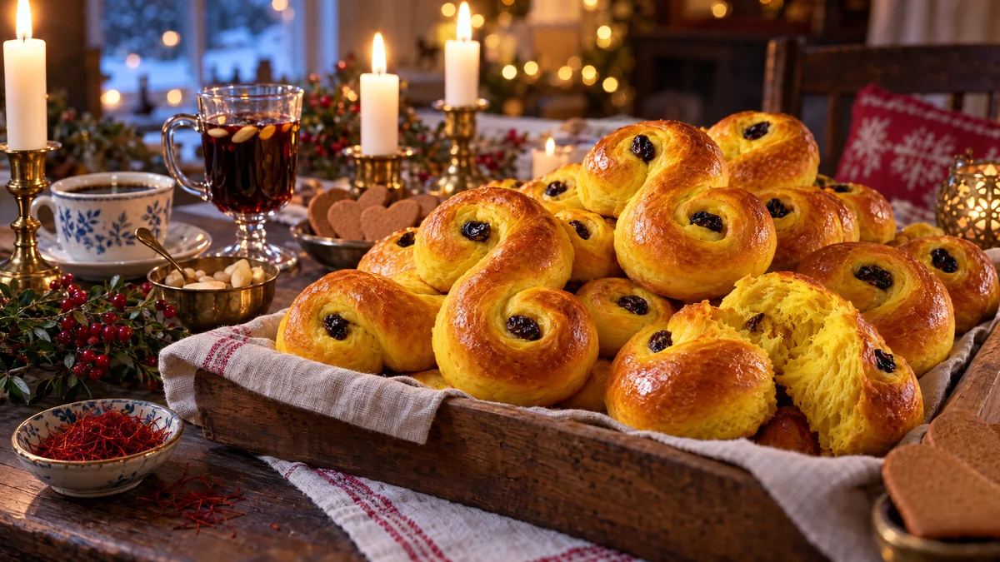

RESTFEST · RECEPTBröd · Fika & bakning
Saftiga lussekatter med kesella
Saffran, smör, mjölk och en burk kesella, hemligheten bakom lussekatter som håller sig saftiga i flera dagar. Degen lyser solgul, och bullarna rullas till klassiska S med ett russin i varje snirkel och gräddas blanka och gyllene. Luciamorgonens doft, gjord hemma.
- Förberedelse
- 45 min + 75 min jäsning
- Tillagning
- 6–8 min per plåt
- Portioner
- ca 40 st
- Nivå
- Medelsvårt
 Det här behöver du
Det här behöver du
Tryck på + vid det du behöver köpa.
Deg
Till garnering
Gör så här
- Mortla saffranet med 1 tsk av sockret till ett fint pulver.
- Smält smöret i en kastrull, häll i mjölken och värm till fingervarmt, ca 37 grader.
- Smula ner jästen i en bunke och rör ut den med lite av den ljumma mjölken. Häll i resten av mjölken.
- Rör ner saffran, socker, salt och kesella. Tillsätt mjölet lite i taget och knåda degen i 10 minuter, gärna i maskin. Den ska vara smidig och lite kladdig, inte fast.
- Täck degen och låt den jäsa i 45 minuter, tills den har dubblats.
- Vänd ut degen på mjölat bakbord och dela den i ca 40 bitar. Rulla varje bit till en ca 20 cm lång rulle och snurra ändarna åt varsitt håll till ett S.
- Lägg lussekatterna på plåtar med bakplåtspapper och låt dem jäsa under en handduk i 30 minuter. Sätt ugnen på 250 grader.
- Pensla med ägg och tryck ner ett russin i varje snirkel.
- Grädda mitt i ugnen i 6–8 minuter, tills de är gyllene. Låt dem svalna under en handduk, så blir de mjuka.
Dekoration och servering
- Lägg lussekatterna i en korg eller på ett fat med en linneduk och några tända ljus runt, till Lucia eller adventsfika.
- Blötlägg russinen i varmt vatten i 10 minuter innan, så blir de mjuka och bränns inte i ugnen.
- Lussekatterna håller sig mjuka i 2–3 dagar tack vare kesellan, och kan frysas direkt när de har svalnat.
- Torra lussekatter blir fantastiska fattiga riddare (recept 5) eller bullpudding (recept 16).
Mått och ugnstemperaturer
Måtten är svenska (dl, msk, tsk, krm). Ugnstemperaturerna gäller vanlig ugn med över- och undervärme; med varmluft, sänk med 20 grader.